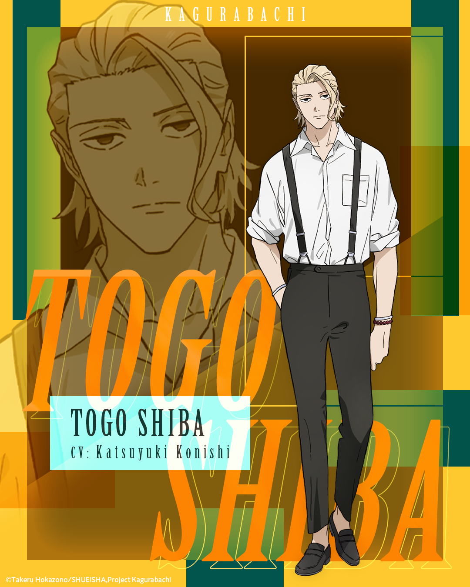

Overview
Shiba is loud, childish on purpose, and one of the most dangerous sorcerers in the book. He grew up with Kunishige, guarded the Soga clan before the war, joined the Kamunabi when the island rose, and walked away after the smith disappeared. In the present he is Chihiro’s adult — the one who takes him to Cafe Haru Haru, the one who pulls him out of rooms he should not die in.
His teleportation is the practical magic of the series: infiltration, extraction, civilian evacuation. Before the war he was already famous as a teenager. He trained under Ichiki with Azami. He is not a blade bearer. He does not need to be.
Personality
Loud, childish on purpose, and one of the most dangerous sorcerers in the book. The childishness is a tool. It lets him walk Chihiro into Cafe Haru Haru without turning the boy into a weapon between meals. It lets him stay the family friend after the family has been murdered. Kunishige’s oldest friend is not the grim minder the revenge plot expects. He is the man who pulls people out of rooms they should not die in, and then makes a joke so the room does not own them.
He believed in Kunishige’s eyes when the Kamunabi’s Datenseki research had gone nowhere for two years. That belief is loyalty as professional judgment. He joined the bureau when the island rose, walked away when the smith disappeared, and spent the quiet years as the household’s remaining adult. After the raid he is Chihiro’s ride into the underworld. He does not take the hunt away from the son. He makes sure the hunt has an exit.
Part 2 puts him back on the Soga grounds as a guardian, before the ore, before the blades, before Cafe Haru Haru had a reason to exist. The loud man in the present is the same person who stood next to Chiaki’s household when the Soga were still prophecy aristocracy and not a cover-up. He has been extracting people from history for a long time.
Abilities
Teleportation. Infiltration, extraction, civilian evacuation. It is the practical magic of the series, not a spectacle kit. He dumps a fight onto the street when the Kamunabi basement is the wrong terrain. He puts Chihiro into rooms and takes him out of them. He is not a blade bearer. A Lifelong Contract would shut those nerves off; he has never signed one.
Before the war he was already famous as a teenager. He trained under Ichiki with Azami — the same Azami who later helps hide Kunishige, the same Ichiki who sits among the Kamunabi leaders. The skill is old. The reputation is older than the Enchanted Blades. When the book needs someone moved across a city without a Storehouse, it uses Shiba.
He is one of the most dangerous sorcerers on the page and the text treats that as background. Hiyuki is the pointed end of the organization he left. Azami is the friend who stayed inside. Shiba is the one who can be in both rooms long enough to empty them. Tafuku’s domain and Hakuri’s Kura are other ways to control space. Shiba does not control the space. He leaves it.
Story role
In Vs. Sojo he is already in the underworld with Chihiro. Char’s sighting, Madoka’s confirmation, Azami’s warning — Shiba is the adult who lets Chihiro stay and then has to live with that decision. He is extraction when the compound goes up. He is not the one who bisects Cloud Gouger. He is the one who makes sure the boy who did it still has a place to sit down.
Through the Rakuzaichi he remains the ride and the exit. Chihiro walks into the auction; Shiba is the reason the walk is not a one-way corridor. When Chihiro joins the Kamunabi on terms — Magatsumi surrendered, Enten kept — Shiba is the former insider standing next to a new one. He knows the building. He left it once.
In the Sword Bearer Assassination arc he is still the practical magic. Uruha’s train, Iori’s hotel, the Tokyo infiltration: Shiba dumps the Yura fight onto the street when the basement will kill the wrong people. Kasen’s leak is the bureau Shiba walked away from, named. Part 1 ends with Akemura loose in that same building. Part 2 opens on Irishima with Shiba still a Soga guardian, Mashiro still alive, Kunishige still a picky dealer who has not yet looked at the ore.
Relationships
Kunishige is the oldest friend. Shiba believed in the eyes, hid the house, and took the son into town after the raid. Chihiro is the job that replaced the Kamunabi: Cafe Haru Haru, extractions, the refusal to let revenge spend the boy. Azami trained with him under Ichiki and stayed in the organization; together they hid the smith. Ichiki remains a Kamunabi leader. Kasen is the director who leaked the address — the reason Shiba’s exit looks, in hindsight, like the only clean professional decision in the building.
Before the war he guarded the Soga. Chiaki, Akemura, the prophecy household: he was already standing in that doorway when Shokoku rose. Akemura is the friend of the friend, the patriot whose flowers made the hiding necessary. In the present he works alongside Hakuri’s Storehouse and Hiyuki’s flame without belonging to either office. He is the family friend. The factions are other people’s letterhead.
Notes
He is thirty-nine. Birthday October 15. Voiced by Jun Fukushima in the voiced comic and Katsuyuki Konishi in the anime; the official art on this page is the Cypic sheet. The English-titled character trailer sits next to Chihiro’s and Kunishige’s on the video desk.
He is not a volume-jacket face. He is the man in the gutters between jacket faces. Former Kamunabi; earlier Soga clan guardian. Teleportation only — no Enchanted Blade, no inherited skeleton, no Storehouse. Official chapters: VIZ / MANGA Plus.